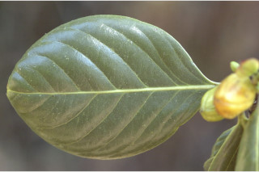
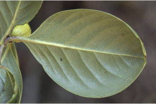
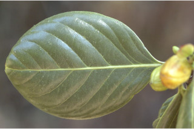
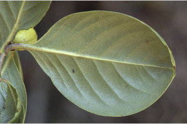
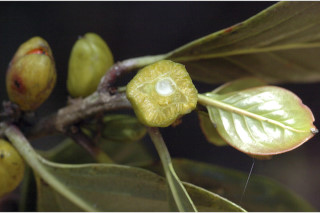
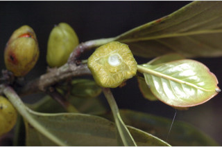

Trees up to 10 m tall.
10 ಮೀ. ಎತ್ತರದವರೆಗಿನ ಮರಗಳು.
Trees up to 10 m tall.
மரங்கள் 10 மீ. உயரம் வரை வளரக்கூடியது.
Bark yellowish brown, lenticellate.
ತೊಗಟೆ ಹಳದಿ ಮಿಶ್ರಿತ ಕಂದುಬಣ್ಣ ಹೊಂದಿದ್ದು ಸೂಕ್ಷ್ಮ ವಾಯು ವಿನಿಮಯ ಬೆಂಡು ರಂಧ್ರಗಳ ಸಮೇತವಿರುತ್ತದೆ.
Bark yellowish brown, lenticellate.
மரத்தின் பட்டை மஞ்சள்-ப்ரவுன் நிறமானது, பட்டைத்துளைகள் (லெண்டிசெல்லேட்) உடையது.
Young branchlets terete, glabrous.
ಕಿರುಕೊಂಬೆಗಳು ದುಂಡಾಗಿದ್ದು ರೋಮರಹಿತವಾಗಿರುತ್ತವೆ.
Young branchlets terete, glabrous.
சிறியநுனிக்கிளைகள் குறுக்குவெட்டுத் தோற்றத்தில் வளையமானது, உரோமங்களற்றது.
Leaves simple, alternate, spiral; stipule caducous; petiole 0.7-1 cm long, planoconvex in cross section, glabrous, reddish when young; lamina 4.5-11.5 x 2-7.5 cm, usually obovate, sometimes oblanceolate or broadly elliptic to suborbicular, apex obtuse to rounded or rarely retuse or emarginate, base cuneate or attenuate, margin entire and revolute, coriaceous or subcoriaceous, shiny above, glabrous, pellucid gland dotted; midrib raised above; secondary_nerves 6-7 pairs; tertiary_nerves broadly reticulate.
ಎಲೆಗಳು ಸರಳವಾಗಿದ್ದುಪರ್ಯಾಯ ಮತ್ತು ಸುತ್ತು ಜೋಡನಾ ವ್ಯವಸ್ಥೆಯಲ್ಲಿರುತ್ತವೆ ; ಕಾವಿನೆಲೆಗಳು ಅಸ್ಥಿರವಾಗಿರುತ್ತವೆ;ತೊಟ್ಟುಗಳು 0.7 ರಿಂದ 1 ಸೆಂ.ಮೀ. ಉದ್ದವಿದ್ದು ಅಡ್ಡ ಸೀಳಿದಾಗ ಸಪಾಟ ಪೀನ ಮಧ್ಯದ ಆಕಾರದಲ್ಲಿರುತ್ತವೆ ಮತ್ತು ರೋಮರಹಿತವಾಗಿದ್ದು ಎಳೆಯದಾಗಿದ್ದಾಗ ಕೆಂಪಾಗಿರುತ್ತದೆ; ಪತ್ರಗಳು 4.5 – 11.5 X 2 – 7.5 ಸೆಂ.ಮೀ. ಗಾತ್ರವಿದ್ದು ಸಾಮಾನ್ಯವಾಗಿ ಬುಗುರಿ ಆಕಾರ ಕೆಲವು ವೇಳೆ ಬುಗುರಿ – ಈಟಿಯ ಅಥವಾ ವಿಶಾಲ ಅಂಡವೃತ್ತದಿಂದ ಉಪ-ವೃತ್ತದ ಆಕಾರ ಹೊಂದಿದ್ದು ಚೂಪಲ್ಲದುದರಿಂದ ದುಂಡಾದ ಅಥವಾ ಅಪರೂಪವಾಗಿ ಅಗ್ರದಲ್ಲಿ ಆಳವಿಲ್ಲದ ಕಚ್ಚುಳ್ಳ ಅಥವಾ ಅಗ್ರದಲ್ಲಿ ಆಳವಾದ ಕಚ್ಚುಳ್ಳ ತುದಿ,ಬೆಣೆಯಾಕಾರದ ಅಥವಾ ಒಳಬಾಗಿದ ತಳವುಳ್ಳ ಬುಡ , ಅಂಚು ನಯವಾಗಿದ್ದು ಹಿಂಸುರುಳಿಗೊಂಡಿರುತ್ತದೆ,ಮೇಲ್ಮೈ ಚರ್ಮ ಅಥವಾ ಉಪ-ಚರ್ಮವನ್ನೋಲುವ ರೀತಿ ಇದ್ದು ಮೇಲ್ಭಾಗ ಹೊಳಪಿನ ಸಮೇತವಿರುತ್ತದೆ, ರೋಮರಹಿತವಾಗಿರುತ್ತದೆ ಮತ್ತು ಪ್ರಕಾಶ ಭೇಧ್ಯ ರಸಗ್ರಂಥಿಗಳನ್ನು ಹೊಂದಿರುತ್ತದೆ.ಎರಡನೇ ದರ್ಜೆಯ ನಾಳಗಳು 6 ರಿಂದ 7ಜೋಡಿಗಳಿರುತ್ತವೆ;ಮೂರನೇ ದರ್ಜೆಯ ನಾಳಗಳು ವಿಶಾಲ ಜಾಲಬಂಧ ನಾಳವಿನ್ಯಾಸದಲ್ಲಿರುವ ಮಾದರಿಯಲ್ಲಿರುತ್ತವೆ.
Leaves simple, alternate, spiral; stipule caducous; petiole 0.7-1 cm long, planoconvex in cross section, glabrous, reddish when young; lamina 4.5-11.5 x 2-7.5 cm, usually obovate, sometimes oblanceolate or broadly elliptic to suborbicular, apex obtuse to rounded or rarely retuse or emarginate, base cuneate or attenuate, margin entire and revolute, coriaceous or subcoriaceous, shiny above, glabrous, pellucid gland dotted; midrib raised above; secondary_nerves 6-7 pairs; tertiary_nerves broadly reticulate.
இலைகள் தனித்தவை, மாற்றுஅடுக்கமானவை, சுழல் போன்று அமைந்தவை; இலையடிச்செதில் எளிதில் உதிரக்கூடியவை ; இலைக்காம்பு 0.7-1 செ.மீ. நீளமானது, இலைக்காம்பு குறுக்குவெட்டுத் தோற்றத்தில் பிளேனோகான்வக்ஸ், உரோமங்களற்றது, இளம்பருவத்தில் சிவப்பு நிறமானது; இலை அலகு 4.5-11.5 X 2-7.5 செ.மீ., தலைகீழ் முட்டை வடிவானது, சிலசமயங்களில் தலைகீழ் ஈட்டி வடிவானது அல்லது அகன்ற நீள்வட்ட வடிவானது முதல் சப்ஆர்பிக்குலார், அலகின் நுனி மெட்டையானது முதல் வட்டமானது அல்லது அரிதாக அதன் முனை சிறு பிளவுடையது (ரெட்யூஸ் அல்லது இமார்ஜினேட்), அலகின் தளம் ஆப்பு வடிவானது அல்லது அட்டனுவேட், அலகின் விளிம்பு முழுமையானது மற்றும் பின்புறம் வளைந்து (ரெவலுட்) காணப்படும், கோரியேசியஸ் அல்லது சப்கோரியேசியஸ், அலகின் மேற்பரப்பு பளபளப்பானது, உரோமங்களற்றது, ஒளிபுகும் சுரப்பி புள்ளிகளுடையது; மையநரம்பு மேற்புறத்தில் அலகின் பரப்பைவிட உயர்ந்து இருக்கும்; இரண்டாம் நிலை நரம்புகள் 6-7 ஜோடிகள்; மூன்றாம் நிலை நரம்புகள் அகன்ற வலைப்பின்னல் போன்றவை.
Flowers in axillary fascicles, 4-6 in clusters, greenish, ca. 0.4 cm across.
ಪುಷ್ಪಮಂಜರಿಗಳು ಅಕ್ಷಾಕಂಕುಳಿನಲ್ಲಿರುವ ಗುಚ್ಛಗಳಲ್ಲಿರುತ್ತವೆ ಮತ್ತು 4ರಿಂದ 6 ಗುಚ್ಛಗಳು ಗುಂಪಾಗಿರುತ್ತವೆ ಹಾಗೂ ಹಸಿರು ಬಣ್ಣದಲ್ಲಿದ್ದು ಅಂದಾಜು 0.4 ಸೆಂ.ಮೀ. ಅಡ್ಡಗಲತೆಯನ್ನು ಹೊಂದಿರುತ್ತವೆ.
Flowers in axillary fascicles, 4-6 in clusters, greenish, ca. 0.4 cm across.
மலர்கள் இலைக்கோணங்களில் கூட்டமாக காணப்படுபவை, 4-6 மலர்களுடையது, பச்சை நிறமானது, 0.4 செ.மீ. குறுக்களவுடையது.
Capsule, ellipsoid, fleshy, ca 1.7 cm long, yellow when ripe, 2-valved; seeds 6-9, aril orange red.
ಸಂಪುಟ ಫಲಗಳು ಅಂಡವೃತ್ತದ ಆಕಾರದಲ್ಲಿದ್ದು ಮಾಂಸಲವಾಗಿರುತ್ತದೆ ಹಾಗೂ ಅಂದಾಜು 1.7 ಸೆಂ.ಮೀ. ಉದ್ದವಿದ್ದು ಕಳಿತಾಗ ಹಳದಿ ಬಣ್ಣದಲ್ಲಿದ್ದು 2 ಕವಾಟಗಳನ್ನು ಹೊಂದಿರುತ್ತವೆ; ಬೀಜಗಳು 6 ರಿಂದ 9 ಇದ್ದು ಕೆಂಪು ಮಿಶ್ರಿತ ಕಿತ್ತಳೆ ಬಣ್ಣದ ಪತ್ರೆ ಸಮೇತವಾಗಿರುತ್ತವೆ.
Capsule, ellipsoid, fleshy, ca 1.7 cm long, yellow when ripe, 2-valved; seeds 6-9, aril orange red.
வெடிகனி (கேப்சியூல்), நீள்வட்ட வடிவானது, சதைப்பற்றானது, 1.7 செ.மீ. நீளமானது, கனியும் போது மஞ்சள் நிறமானவை, 2-அறைகளுடையது; விதைகள் 6-9, ஆரஞ்ச்-சிவப்பு நிறமான பத்ரி (ஏரில்) உடையது.


 





 
